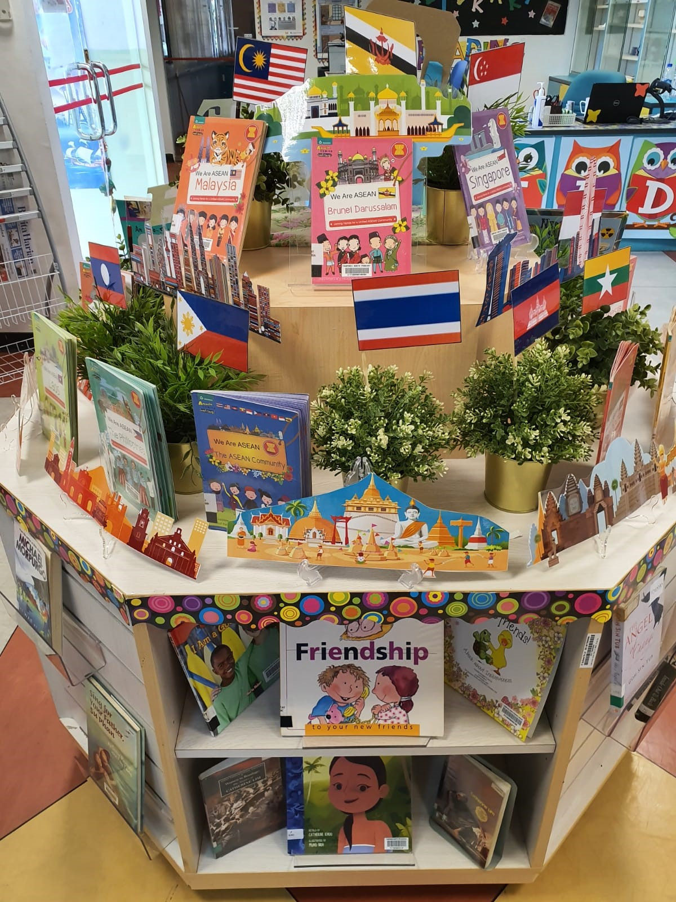

School Library
Was Established in 1991
The Library at Tampines North is a comfortable space with chairs and couches for you to read a book. Although there are not alot of books, books are usually exciting and will take you to an adventure out of this world. There are posters encouraging reading and a stage wwhich is sometimes used in ceremonies regarding the whole school.